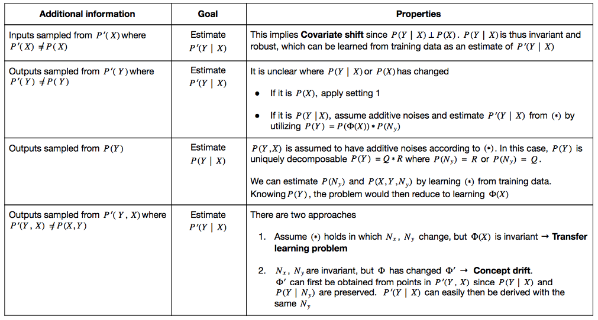
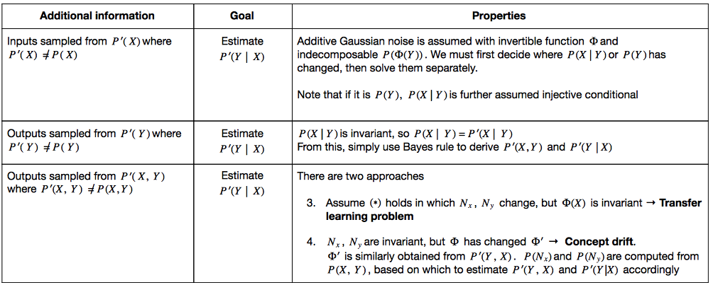

CAUSAL AND ANTICAUSAL LEARNING
The application of Causality to solve Machine Learning (ML) problems roots from the idea that there exists a true causal data-generating structure underlying observational data, which if machines can learn it, will improve their robustness and generalization capacity. Thus, a large majority of the papers at the intersection of Causality and ML focus on tackling Out-of-Distribution (Domain) Generalization. However, I personally would love to see more efforts towards high-level causal reasoning i.e., teach machines to reason causally.
Two fundamental concepts particularly useful for Domain Generalization (DG) are Invariance and Intervention. Intervention in this context refers to the changes in the joint distribution \(\mathsf{P}(Y,X)\), and according to the Principles of Independent Mechanisms, some parts of the causal generative model remain invariant under certain interventions. This means interventions on one variable only alter its conditional distribution given its causes, leaving the other mechanisms unchanged. This notion of invariance is expected to support transferability and robustness to distribution shift.
For readers who are not familiar with causal concepts, I suggest you read up on works by such classic names as Judea Pearls, Bernhard Schölkopf, Jonas Peters, Elias Bareinboim. Though there are tons of good reads out there, my go-to is Elements of Causal Inference by Peters, Janzing and Schölkopf (2017).
In this post, I summarize the paper On Causal and Anticausal Learning by these authors (again), which I find to be a good starting point to navigate research in this area. I also collect and categorize Causal ML papers based on this paper.
Causal or not Causal?
Given inputs \(X\) and target \(Y\), it can either be \(X\) causes \(Y\) \( (X \rightarrow Y)\) or \(Y\) causes \(X\) \((Y \rightarrow X)\). The former direction isA simple structural causal model is illustrated in the above figure. \(C\) is the cause variable and \(E\) is the effect variable. \(N_{C}\) is a noise variable influencing \(C\) and \(N_{E}\) influences \(E\) via $$E = \varphi(C, N_{E}) = \Phi(C) + N_{E} \quad (*)$$ where \(N_{C}\) and \(N_{E}\) are independent. \(P(N_{C})\) and \(P(N_{E})\) are normally assumed Gaussian.
In the paper, the authors describe different problem setups for causal and anticausal learning tasks. In all cases, we are given training points sampled from \(\mathsf{P}(Y,X)\), and the goal is to estimate the conditional distribution \(\mathsf{P}(Y|X)\). The scenarios mainly differ in terms of what additional information is given, altering the nature of the problem. Here I attempt to summarize the key properties of each scenario, and readers are encouraged to delve further into the paper for the suggested solutions.Causal Learning: Predicting Effect from Cause

AntiCausal Learning: Predicting Cause from Effect
In this case, \(\mathsf{P}(Y|X)\) is sensitive to change in \(P(Y)\). It would better to model \(\mathsf{P}(X|Y)\) first and construct \(\mathsf{P}(Y|X)\) using Bayes’ rule. Based on this, you can see there are two lines of works. Works that assume shift in joint distribution \(\mathsf{P}(Y,X)\) is due to covariate shift follow causal direction. I classify these papers as Causal Invariant Predictors. Meanwhile, some other papers assuming anticausal direction attempt to learn invariant representation \(\Phi(C)\) under label shift, thus categorized into Causal Invariant Representations.
I want to emphasize that both directions are possible and applicable to different scenarios. On the other hand, there are also other lines of work that rely on loose causal assumptions e.g., Invariant Risk Minimization or focus on learning the underlying independent mechanisms.
For interested readers, do check out the full paper list available at here.And a quick summary of Causal Invariant Predictors papers can be found here.